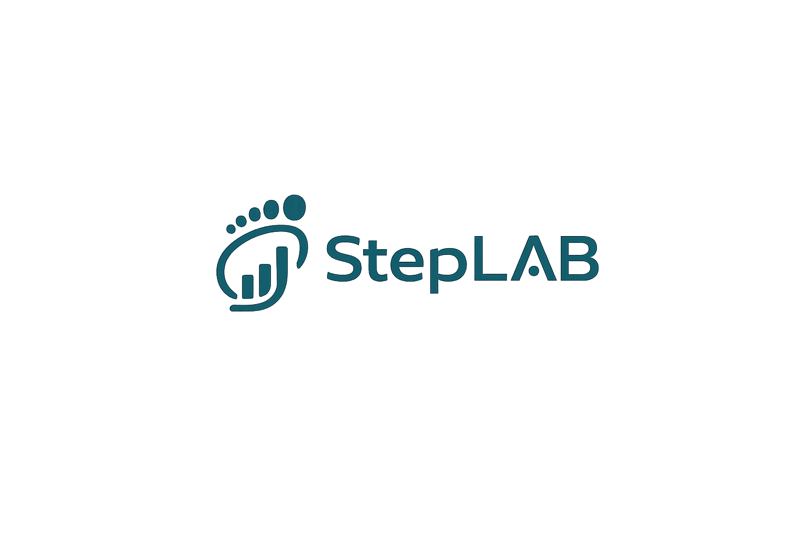

看不出来
孩子走路有点怪、鞋底磨损不均、跑跳不稳，家长往往只能凭经验判断，很难知道是否需要进一步关注。

StepLAB 下载 AppProblem Insight
儿童足部仍在发育，足弓、受力习惯和行走姿态都可能在日常运动中逐渐变化。但这些变化通常难以被家长及时、准确地看见。
孩子走路有点怪、鞋底磨损不均、跑跳不稳，家长往往只能凭经验判断，很难知道是否需要进一步关注。
机构或体态检测通常是阶段性检查，无法持续记录孩子日常行走和运动中的步态变化。
传统矫正鞋垫或机能鞋更多提供静态支撑，缺少训练反馈、复测对比和长期趋势记录。
StepLAB 关注的不是一次性判断，而是让儿童步态变化可以被持续看见、理解和反馈。
Product
StepLAB 儿童智能步态监测鞋垫内置足底压力传感器与运动传感器，可记录儿童日常行走、跑跳中的足底受力和步态状态。配套 App 将数据转化为家长可理解的趋势提醒、训练任务、支撑垫建议和复测报告。
Core Features
把压力、运动和复测数据转化为清楚、温和、可执行的家庭步态健康管理建议。
通过关键压力点采集后跟、足弓、前掌和趾区的受力变化，帮助家长观察孩子日常足底压力分布趋势。
结合加速度计与陀螺仪识别站立、行走、跑步等状态，分析步态周期、支撑时间和足部姿态变化。
当左右受力差异、足弓压力或足部前进角出现持续变化时，App 会给出温和提醒，帮助家长及时关注。
根据近期步态趋势生成足弓激活、脚趾抓地、直线步行等训练任务，并记录完成情况。
基于足底压力趋势与复测结果，推荐低、中、高不同支撑强度的可替换支撑垫，形成可执行的辅助支撑路径。
通过周期性对比展示步态稳定性、左右受力差异、足弓压力趋势和训练完成率，让调整效果有迹可循。
How It Works
StepLAB 不追求一次性判断，而是通过持续记录和阶段反馈，让每一次调整都有依据。
鞋垫记录足底压力和运动状态。
系统分析左右受力、足弓压力和步态稳定性变化。
App 将复杂数据转化为家长可理解的趋势提醒。
根据近期状态生成轻量训练任务。
结合趋势建议选择合适支撑垫。
周期性比较调整前后的变化。
根据新数据继续优化训练与支撑方案。
Support System
相比复杂的主动机械结构，StepLAB 当前采用更稳妥的可替换支撑垫方案。用户可以根据 App 建议与复测结果，选择不同支撑强度的足弓支撑垫，在保证舒适性的基础上进行辅助支撑调整。
支撑垫建议仅用于日常辅助观察和支撑调整，不构成医疗处方。
适合初次使用或轻度支撑需求，帮助孩子逐步适应足底支撑。
适合日常辅助支撑，在舒适性和支撑感之间保持平衡。
适合更明显的支撑需求，建议结合复测结果或专业建议后使用。
Use Scenarios
在日常穿鞋过程中持续记录步态趋势，帮助家长更早发现值得关注的变化。
观察跑跳、步频和支撑稳定性，为儿童运动训练提供辅助反馈。
记录足弓区域压力趋势，辅助家长进行长期观察和复测。
配合训练任务和支撑垫建议，形成阶段性复测与调整记录。
通过 BLE 断连提醒和手机协同定位，提供基础的近距离防丢辅助。
Technology
StepLAB 采用成熟轻量的技术组合，将核心能力集中在足底压力监测、IMU 步态识别、BLE 数据同步和 App 端分析上。这样既能控制鞋垫厚度、功耗和成本，也能优先验证儿童步态健康管理的核心价值。
当前产品不采用复杂主动气动结构，不依赖独立蜂窝联网，也不承诺自动治疗。
App Preview
StepLAB App 将足底压力和步态数据转化为趋势图、训练任务、支撑建议和复测报告，帮助家长完成从观察到调整的全过程。
FAQ
我们把产品边界讲清楚，让家长更安心地理解 StepLAB 的作用。
当前产品定位为儿童足部发育与步态健康的日常监测和反馈工具，不用于疾病诊断、治疗或替代专业医疗判断。如孩子出现持续疼痛、明显异常或运动受限，建议咨询医生、康复治疗师或专业机构。
StepLAB 不承诺改变足部形态或替代专业判断。它的作用是持续记录足底压力和步态趋势，提供训练反馈、支撑垫建议和复测参考，帮助家长更早关注孩子的步态变化。
鞋垫更适合作为第一阶段的低干扰载体，可以放入多种儿童鞋中使用，也更容易验证足底压力监测、步态分析和支撑反馈等核心能力。整鞋一体化可以作为后续升级方向。
建议在日常行走或训练场景中规律使用，以便形成连续趋势记录。具体使用时长可以根据孩子舒适度和家庭习惯调整。
App 会将足底压力和步态数据转化为趋势提醒、训练任务和复测报告，尽量避免复杂术语，让家长能够快速理解当前状态。
Download
下载 StepLAB App，连接智能鞋垫，查看步态趋势、训练任务、支撑建议和复测报告。